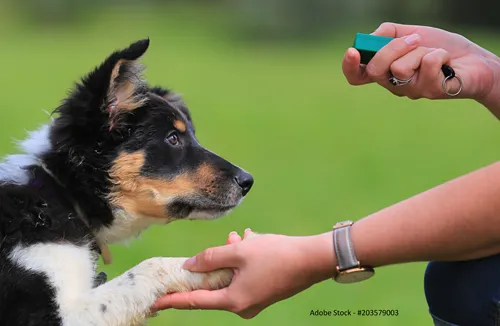

Markersignal-Training
Produktprofil · Marktplatz-Daten 2026-10-09 · Verkaufsseiten-Recherche 2026-10-09 · Kategorien: Animals & Pets
- Markersignal-Training ist ein/e Mitgliederbereich & Videokurs in Animals & Pets, vertrieben über den Digistore24-Marktplatz von Anbieter Carola-Zilm, gelistet seit 2024-07-21.
- Listenpreis $36.66; Digistore24 meldet — Checkout-Konversion, — Stornierungsquote und 50 % Affiliate-Provision.
- Verdienst pro Verkauf (Affiliate): $18.33 (Anbieter-seitige Statistik, keine Prognose).
Interesse an Markersignal-Training? Aktueller Preis, Boni und Garantiebedingungen finden Sie auf der offiziellen Seite des Anbieters:
Offizielle Verkaufsseite ansehen
Affiliate-Link (Werbung) — wir verdienen ggf. eine Provision, ohne Mehrkosten für Sie.

Marktplatz-Daten
| Produkttyp | Mitgliederbereich & Videokurs |
|---|---|
| Preis | $36.66 (Single payment) |
| Affiliate-Provision | 50 % |
| Garantie/Rückgabe | Laut Verkaufsseite des Anbieters — vor dem Kauf auf der offiziellen Seite prüfen |
| Anbieter | Carola-Zilm (gelistet seit 2024-07-21) |
| Marktplatz-Statistiken* | Checkout-Konversion — · Stornoquote — · Verdienst/Verkauf $18.33 |
* Anbieter-seitige Statistiken von Digistore24; sie hängen von der Traffic-Qualität ab und sind keine Prognose.
Marktplatz-Beschreibung des Anbieters
Dieser Kurs bietet ein effektives und wissenschaftlich fundiertes Training für Hundebesitzer. Das Markersignal-Training erleichtert die Kommunikation zwischen Mensch und Hund und sorgt für schnelle, nachhaltige Ergebnisse. Teilnehmer lernen praxisorientierte Methoden zur Verhaltenskorrektur und Konditionierung, unterstützt durch Videos und Übungen. Warum empfehlen? - Ideale Lösung für Hundeanfänge…
Von der Verkaufsseite des Anbieters
Seitentitel: 5 Geheimnisse des Markersignal-Trainings für Hundebesitzer
Meta-Beschreibung: Entdecke effektive Techniken im Markersignal-Training. Stärke die Bindung zu deinem Tier und profitiere von 20 % Rabatt!
Abschnitts-Überschriften
- Warum Markersignal-Training?
- Was ist das Markersignal?
- Was wirst du in diesem Kurs lernen?
- Wer hat den Kurs erstellt?
- Warum unser Kurs einzigartig ist
- Hier sind einige Gründe, warum unser Kurs die beste Wahl für dich ist:
- Melde dich jetzt an und starte dein Trainingserlebnis!
- Zufriedenheit garantiert:
- Melde dich jetzt an und beginne deine Reise zu einem besseren Verständnis und einer tieferen Verbindung zu deinem Tier.
- Abonniere meinen Informationsservice
Einstiegstext
Das Markersignal ist eine faszinierende Technik, die die Kommunikation zwischen dir und deinem Hund auf eine völlig neue Ebene hebt. Es handelt sich dabei um ein oder mehrerere spezifische Signale, welche deinem Tier genau in dem Moment mitteilt, in dem es das gewünschte Verhalten zeigt: „Ja, genau das ist es! Dafür bekommst du eine Belohnung!“ Doch wie genau funktioniert diese Methode und warum ist sie so effektiv?
Das Besondere am Markersignal ist seine Fähigkeit, präzise und sofortige Rückmeldung zu geben. Das Signal selbst kann in verschiedenen Formen auftreten – sei es ein Klickgeräusch durch einen Clicker, ein bestimmtes kurzes Wort wie „Ja!“, das du aussprichst, oder ein visuelles Zeichen wie ein Handzeichen oder ein Lichtsignal. Diese Vielfalt an Optionen erlaubt es dir, das Markersignal auf die Vorlieben und Bedürfnisse deines Tieres anzupassen. Aber wie wählst du das richtige Signal aus? Und wie stellst du sicher, dass es von deinem Tier richtig erkannt wird?
Stell dir vor, dein Tier zeigt genau in dem Moment, in dem du es willst, das gewünschte Verhalten. Doch wie sorgt das Markersignal dafür, dass dein Tier versteht, dass genau dieses Verhalten richtig war? Und wie kannst du das Timing so perfekt anpassen, dass es sofortige und präzise Rückmeldung gibt?
Die Antwort auf diese Fragen ist der Schlüssel zu einem erfolgreichen Training. Wenn du das Markersignal im perfekten Moment setzt – also genau dann, wenn dein Tier das Verhalten zeigt, das du dir wünschst – wird der Lernprozess des Tieres erheblich beschleunigt. Aber wie schaffst du es, das Timing so genau zu treffen? Und wie kannst du sicherstellen, dass dein Tier das Signal immer korrekt interpretiert?
Recherche-Methode: rohes HTML · 2319 Wörter · Qualität: medium · recherchiert am 2026-10-09. Vollständige Recherche-Datei (MD) ↗
Wie Produkte dieser Art geliefert werden
Allgemeiner Hinweis zu diesem Produkttyp (keine anbieterspezifische Anleitung): Videokurse laufen über einen Mitgliederbereich: nach dem Checkout erhalten Sie Zugangsdaten per E-Mail und können die Lektionen in Ihrem eigenen Tempo streamen. Für die genaue Anwendung von Markersignal-Training sind die offizielle Verkaufsseite und die enthaltenen Materialien maßgeblich.
Gut zu wissen
- Keine Garantie-Formulierung in unserer Recherche gefunden — bestätigen Sie das Rückgabefenster auf der offiziellen Seite, bevor Sie kaufen.
Ähnliche Angebote in Tiere & Haustiere

BAUCH, BEINE, PO – das Trainingsprogramm für dein Freizeitpferd In nur 8 Wochen Muskulatur, Balance & Tragkraft aufbauen, für ein gesundes, motiviertes Pfer

Zertifizierter Katzenverhaltensberater / Katzencoach – Fernlehrgang der aCATemy® Bewirb eine professionelle Online-Ausbildung für alle, die Katzenverhalten fund

Diese Schulung ist hilft Haltern von Herdenschutzhunde in Familienhand, ein glückliches und harmonischen Zusammenleben zu ermöglichen. Empfehlen Sie das einziga

So wird aus Lesen echte Hilfe vor Ort! Im Guide erfahren Sie: Warum Tierschutz heute wichtiger ist den je Was wirklich im Tierschutzalltag so passiert Die 5 grö
Wo Sie es sich ansehen können
Aktuelle Preise, Garantie und Boni finden Sie auf der offiziellen Verkaufsseite:
Offizielle Verkaufsseite ansehen
Das ist ein Affiliate-Link (Werbung) — kaufen Sie darüber, verdienen wir ggf. eine Provision, ohne Mehrkosten für Sie.